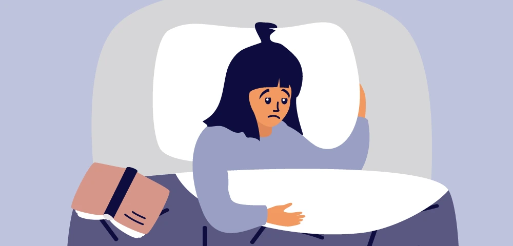

Learn to deal with your Stress with our professional counsellors and psychologists
Does stress mean a mental health problem?
Feeling pressured is a normal part of life. Sometimes feeling that pressure is what makes us actively respond and be more present. However, too much stress can be a problem. Let us be clear, Stress Mental Health in itself is not a mental illness. However stress, especially if repeated can cause mental illness, such as depression and anxiety. Also, mental illness can make it harder to tackle life’s everyday stressors.
Can stress cause headaches and upset stomachs?
Certainly, sometimes the first signs of stress can be body and stomach aches. Often when we have stress our body produces certain hormones and neurotransmitters, which can have physical effects. Also when we are stressed, we don’t take care of ourselves as well as we should. For example, dehydration and lack of sleep can cause headaches.
Why do we get stressed?
There are a number of factors that influence how stressed we feel.
- Stressors add up. Sometimes we may be able to deal with an overly critical boss. However, if we are having troubles in our family relationships and finances, an overly involved manager might push us over the edge.
- The support you get. Often the care, encouragement or mere presence of supports can make a world of difference. Turning to those you can count on, is one way to get the support you need.
- Your past experiences managing Stress Mental Health. However, if you are familiar with the stressors, it may seem less daunting.
- Understanding of a situation. This is often related to the mindset we take in the face of the stressor. That is to say, sometimes we can view distress as a challenge. Certainly, an opportunity to grow.
What Determines how you experience stress?
- The situation that is causing the stress and the underlying suggestions. For example, reduction of hours at work and having a loan to pay.
- The supports that you have around you. Could a partner or family member help you out?
- Other stressors in your life and how they impact you. For example, you might have to care for someone or do school runs which mean it’s harder for you to find work.
- Having an illness could be a mental illness or a heart condition that reduces your resilience in dealing with stress.
- We all have different personalities, which means we all respond to stress differently. Our past experiences of stress, ways we have learnt to deal with stress affect our coping mechanisms. Sometimes we are not our best friends when facing stressful situations.

How do we help you in dealing with your stress?
Seeing a telehealth psychologist might help you notice signs that you are stressed. We all experience stress in a different way and are sometimes not aware of the various ways stress has a toll on our bodies. An online psychologist can see you at home. Which is great with how busy life can be. They can help you address the causes of stress and remove stress from your life. They can also improve your organisational ability and accept what you can not change.
What are some of the signs of Stress?
Stress can come in many different ways. Having constant worry which can affect your concentration and ability to focus. People who are under excessive stress might notice that they are more irritable, restless or on edge.
Chronic and or multiple stressors can lead to mental health conditions such as depression or adjustment disorder. Stressors can also make it harder to recover from a mental illness. It’s important to discuss stressors you might be facing with your telehealth psychologist and psychiatrist.
Your stress might trigger physical symptoms. There’s sometimes overlap between stressors and the onset of stomach conditions, body pains and headaches. If you are having physical symptoms which might be related to your stress it’s important to discuss these with your local GP and telehealth psychologist or psychiatrist.
Your appetite and eating habits might change when you are stressed. Some of us are run off our feet dealing with stress. we might lose our appetite, not have the time to cook or try to manage our stress by controlling our eating. Others might comfort-eat so to speak to manage their stress.
Seeing a psychologist might help you notice signs that stress you, we all experience stress in a different way and sometimes are not aware of the various ways stress has a toll on our bodies.
Talking treatments for Stress?
Counsellors and psychologists use a number of techniques to address stress.
- Mindfulness-based stress reduction is an evidence-based meditation-based therapy originally designed for stress management. It involves yoga, gentle exercises and mindfulness practices to help with stress.
- Cognitive Behavioral Therapy (CBT) can help you reframe your problems, plan activities better and include balance and self-care into how you approach your stressors.
What else helps with Stress?
Balance and self-care are important in the face of increasing stressors. Speak with your in-person or online psychologist. You can also consider yoga and meditation. Massage or acupuncture are other treatments that psychologists suggest to help with stress.
What is resilience?
Life involves twists and turn, which people respond to differently. Psychologists describe resilience as a process of adaptation in the face of various stressors. Resilience involves both standing up when stressors bring you down plus growth and learning as an individual. Resilence over time can be fostered and grown. Being more resilient can help you tackle everyday stressors.
Contact our support team by email, webchat or on social media. We can organise an appointment for you with one of the telehealth psychologists to help with Stress Mental Health.